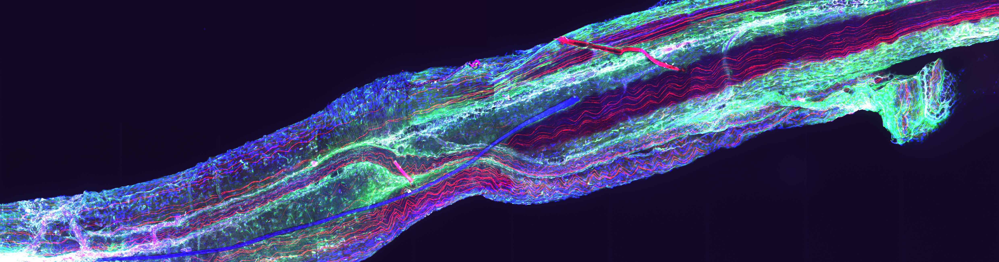

Research
Core areas of focus
We are a neuroscience research group that leverages the connection between the operating room and the laboratory to investigate neurological disease, such as drug-resistant epilepsy and peripheral neuropathy. Our work extends to questions of patient access to neurosurgical interventions and related issues of equity and ethics. We are passionate about rigor, reproducibility, and collaboration in pursuit of discoveries that can one day circle back to patients.
Understanding seizures requires investigating the tissue in which they arise. Our group works directly with resected surgical brain tissue, using it as a window into the cellular and molecular landscape of epilepsy. Our work spans several directions: the role of somatic mutations in focal epilepsy; cell-type-specific gene expression differences across epilepsy subtypes including focal cortical dysplasia and mesial temporal sclerosis; the biology of perineuronal nets and their potential contribution to seizure generation.
Traditional methods for analysing brain tissue in detail are labour-intensive and can be challenging to scale. We are developing a virtual staining platform that uses deep learning to extract structural information from routine pathology slides without the need for specialised staining. This will make it possible to analyse large collections of archived tissue for markers that would otherwise stay invisible.
We use mouse models to address questions that are less tractable in human tissue and to test potential therapeutic approaches. Current work includes investigating the distribution of AAV-based gene therapies in the brain, a growing consideration as viral vector approaches move toward clinical use in epilepsy. We also study diabetic peripheral neuropathy, examining the molecular pathways involved in nerve degeneration and regeneration and exploring the potential of microtubule-stabilising compounds as a therapeutic strategy.
Good neurosurgical care depends not only on what happens in the operating room, but also on who can access it. We examine questions of access, equity, and ethics in neurosurgical practice including disparities in care for rural patients, the dynamics of informed consent, and the impact of emerging treatments on how stroke care is organised at a systems level.
Surgical approaches can lead to seizure reduction and cognitive improvement in patients whose epilepsy does not respond to medication, yet outcomes are variable and not straightforward to predict. We study molecular and electrophysiological predictors of surgical outcomes. Additionally, we are conducting an institutional review of different surgical approaches over the past 15 years, allowing us to track how the field has evolved and which approaches work best for which patients.